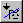
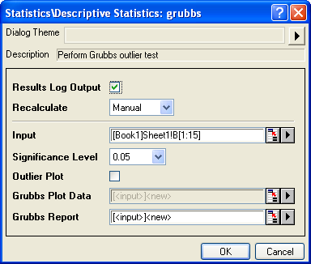
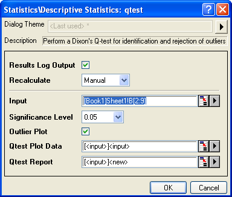
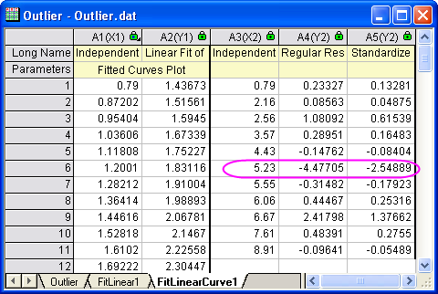
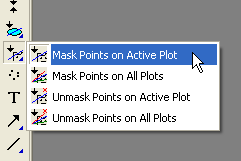
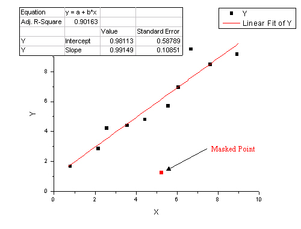

Ausreißer entdecken
Detect-Outlier
Ein Ausreißer ist vom statistischen Standpunkt eine Beobachtung, die
numerisch weit von den restlichen Daten abweicht. Origin enthält Methoden
und Hilfsmittel zum Suchen und Testen von Ausreißern.
Um zu bestimmen, ob es sich ein Ausreißer in einem bestimmten Datensatz
aus wiederholten Messungen befindet, stehen die Hilfsmittel Grubbs-Test
und Dixons Q-Test zur Verfügung. Es ist auch möglich, Ausreißer
mit Hilfe des Q-Q-Diagramms grob grafisch darzustellen.
Um einen Ausreißer in einer Regression zu entdecken, können Sie die
standardisierten Residuen verwenden.
Wenn Sie einen Punkt statistisch als Ausreißer identifiziert haben,
können Sie den Punkt
maskieren, indem Sie die Schaltfläche Regionales Maskierungshilfsmittel
 in
der Symbolleiste Hilfsmittel verwenden.
Grubbs-Test
Um in einer Reihe von wiederholt gemessenen Daten, die in einer Spalte
aufgelistet sind, mit dem Grubbs-Test Ausreißer zu erkennen:
- Wählen Sie im Menü Statistik: Deskriptive Statistik: Grubbs-Test,
um den Dialog grubbs zu öffnen.
- Wählen Sie den Eingabedatenbereich, das Signifikanzniveau und weitere
Einstellungen. Klicken Sie dann auf OK.

oder
- Das Befehlsfenster wird geöffnet.
- Rufen Sie die X-Funktion grubbs
direkt auf.
Das Ergebnis wird sowohl im Ergebnisfenster als auch im Befehlsfenster
ausgegeben. Außerdem wird ein Berichtsblatt erstellt. Sollte Ausreißerdiagramm
ausgewählt sein, wird auch ein Arbeitsblatt mit den Diagrammdaten erzeugt:
| ox |
Der Wert des vermuteten Punkts |
|---|
| index |
Zeilenindex des vermuteten Punkts |
|---|
| gstat |
Der berechnete g-Wert des vermuteten Punkts |
|---|
| critical |
Der kritische g-Wert auf festgelegtem Signifikanzniveau |
|---|
| pval |
Der p-Wert für den Test |
|---|
| sig |
sig=1 bedeutet, es gibt einen Ausreißer, sig=0 bedeutet, es gibt keinen
Ausreißer |
|---|
| conclusion |
Eine Schlussfolgerung zu dem statistischen Ergebnis |
|---|
| rd |
Der Arbeitsblattbereich für die Daten des Ausreißerdiagramms,
falls diese Option ausgewählt ist |
|---|
| rt |
Der Arbeitsblattbereich für die Berichtstabelle |
|---|
Dixons Q-Test
Um Ausreißer in einer Reihe von wiederholt gemessenen Daten, die in
einer Spalte aufgelistet sind (Stichprobenumfang von 3 bis 10), mit Dixons
Q-Test zu entdecken:
- Wählen Sie im Menü Statistik: Deskriptive Statistik: Q-Test
nach Dixon, um den Dialog qtest zu öffnen.
- Wählen Sie den Eingabedatenbereich, das Signifikanzniveau und klicken
Sie dann auf OK.

oder
- Das Befehlsfenster wird geöffnet.
- Rufen Sie die X-Funktion qtest
direkt auf.
Das Ergebnis wird sowohl im Ergebnisfenster als auch im Befehlsfenster
ausgegeben:
| ox |
Der Wert des vermuteten Punkts |
|---|
| index |
Zeilenindex des vermuteten Punkts |
|---|
| qstat |
Der berechnete Q-Wert des vermuteten Punkts |
|---|
| critical |
Der kritische Q-Wert auf festgelegtem Signifikanzniveau |
|---|
| sig |
sig=1 bedeutet, es gibt einen Ausreißer, sig=0 bedeutet, es gibt keinen
Ausreißer |
|---|
| conclusion |
Eine Schlussfolgerung zu dem statistischen Ergebnis |
|---|
| rd |
Der Arbeitsblattbereich für die Daten des Ausreißerdiagramms,
falls diese Option ausgewählt ist |
|---|
| rt |
Der Arbeitsblattbereich für die Berichtstabelle |
|---|
Ausreißer
mit Residuendiagramm entdecken
Sie können eine Regression (linearer und polynomialer oder nichtlinearer
Kurvenfit) und anschließend die standardisierten Residuen zum Erkennen
der Ausreißer verwenden.
Das folgende kurze Tutorial zeigt Ihnen, wie Sie ein Residuendiagramm
verwenden, um Ausreißer zu erkennen:
 |
- Beginnen Sie mit einer neuen Arbeitsmappe und importieren Sie die
Datei \Samples\Curve Fitting\Outlier.dat
- Markieren Sie die zweite Spalte und wählen Sie den Menüpunkt Zeichnen :
Symbol : Punktdiagramm, um ein Punktdiagramm herzustellen.
- Mit dem aktiven Diagramm gehen Sie auf den Menüpunkt Analyse :
Anpassen : Linearer Fit, um den Dialog Lineare Anpassung aufzurufen.
Bitte beachten Sie, dass, wenn Sie den Dialog Lineare Anpassung vorher
verwendet haben, ein Ausklappmenü erscheint und Sie Dialog öffnen
wählen müssen.
- Erweitern Sie den Baumknoten Fit-Optionen im Dialog und
deaktivieren Sie das Kontrollkästchen Scheinbarer Fit.
- Erweitern Sie den Baumknoten Residuenanalyse im Dialog und
aktivieren Sie das Kontrollkästchen Standardisiert.
- Ändern Sie die Auswahlliste Neu berechnen im oberen Bereich
des Dialogs mit Auto und und drücken Sie im unteren Bereich auf
OK. Der Dialog wird geschlossen, und es wird eine lineare Regression für
diese Daten durchgeführt.
- Wählen Sie das Ergebnisblatt FitLinearCurve1 in der Datenarbeitsmappe
und scrollen Sie zur rechten Seite, um die Spalte Standardisiertes
Residuum zu sehen. Sie werden feststellen, dass der Wert in Zeile
6 in dieser Spalte -2,54889 ist, daher ist dieser Datenpunkt ein
Ausreißer:

- Aktivieren Sie das Diagramm und klicken Sie mit der linken Maustaste,
die Sie dabei gedrückt halten, auf Regionales Maskierungshilfsmittel
in der Symbolleiste Hilfsmittel. Wählen Sie das Untermenü Punkte auf
aktiver Zeichnung maskieren, das als erste Option im Aufklappmenü
angezeigt wird.

- Gehen Sie bei gewähltem Untermenü auf das Diagramm und wählen den
6. Datenpunkt aus, um den Punkt zu maskieren. Dies wird die Eingabedaten
der Operation der linearen Anpassung verändern und einen automatischen
Aktualisierungsmechanismus auslösen. Die lineare Anpassung wird ohne diesen
besonderen maskierten Punkt wiederholt werden. Die Anpassungskurve im
Diagramm und die eingefügten Parameter werden automatisch aktualisiert.
Das Ergebnis Ihres Diagramms sollte nun wie unten abgebildet aussehen:

|